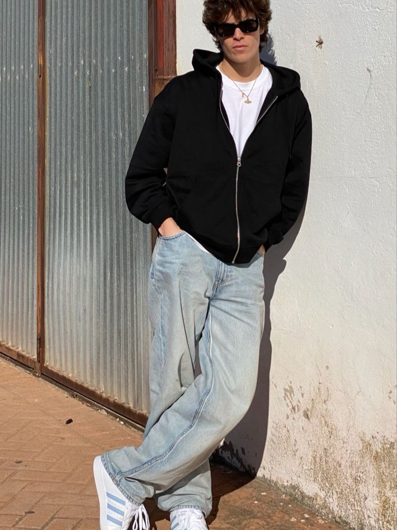
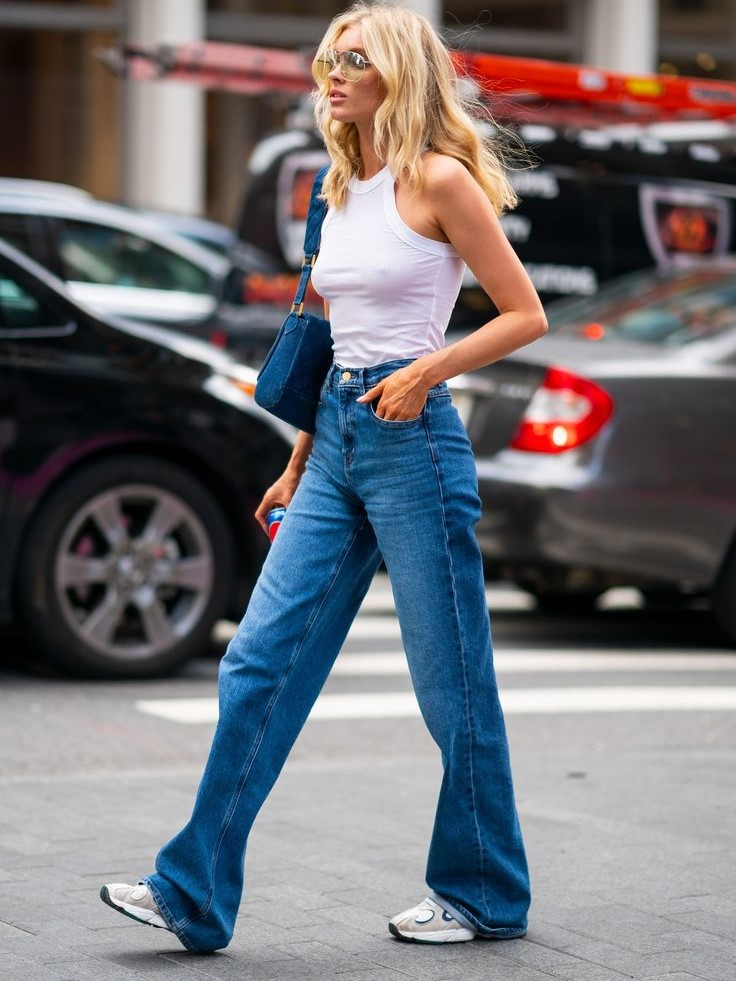
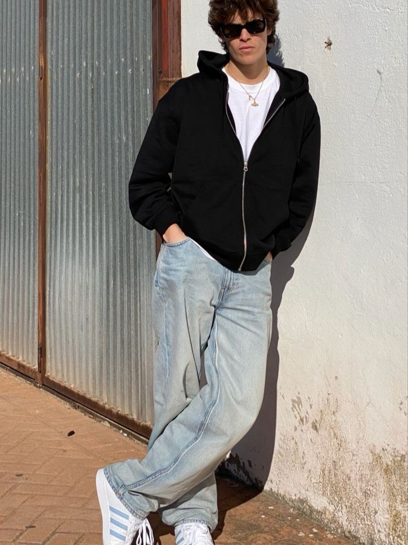
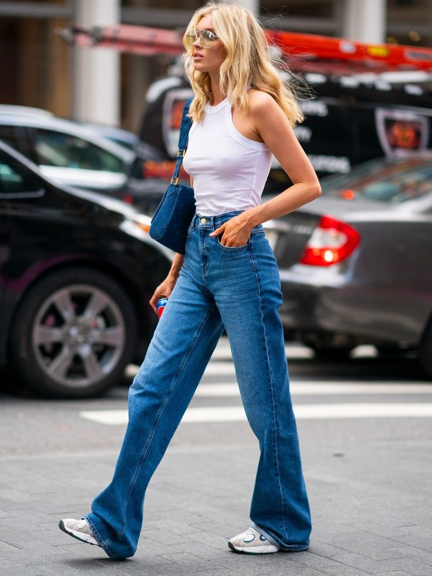

Jeans
O jeans é essencial no streetwear, usado de forma descontraída e urbana. Calças skinny, jaquetas, peças rasgadas e camisas são populares. Acessórios em jeans também são comuns. O visual geralmente combina conforto e estilo, sendo usado com tênis e camisetas básicas.
 


